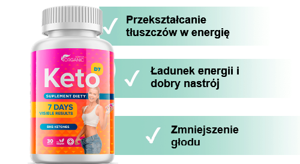

rewolucyjne za rachunek ketozy!


tylko dziś! rabat 50%
nowa cena:137 zł
stara cena:274 zł
Ketoza - pozyskiwanie energii z tłuszczów, a nie z glukozy, która dostaje się do organizmu wraz z węglowodanami. Jeśli ciało przestaje otrzymywać energię z węglowodanów, to po 7-14 dniach przechodzi w stan ketozy. W rezultacie rozpoczyna się aktywna transformacja tłuszczów w energię.
Jednak dieta polegająca na wykluczeniu węglowodanów z diety jest trudna do zaakceptowania przez ludzi.
Z Keto D7 możesz rozpocząć proces odchudzania się bez torturowania siebie. Kompleks zapewni dostawę ketonu
do ciała z zewnątrz, pomagając pozbyć się nadmiaru tłuszczu.

Kapsułki powodują ketozę w organizmie i przekształcają zmagazynowane tłuszcze w energię. Gwarantujemy schudzanie codziennie.
W procesie ketozy tłuszcze są rozkładane na kwasy tłuszczowe i glicerynę, które następnie przekształcane są w ciała ketonowe. Jednak ketoza jest wywoływana tylko w przypadku całkowitego wyczerpania zapasów glikogenu w wątrobie i tkance mięśniowej, zwykle dzieje się to w ciągu 7-14 dni.
Aby przyspieszyć ten proces, za którym idzie spalanie tłuszczu, polecam moim pacjentom suplement diety Keto D7. Keto D7 doskonale wspiera ciało podczas diety ketonowej: wzbogaca ciało o niezbędne elementy, tłumi głód, eliminuje zmęczenie i niepokój. Keto D7 zapewnia zdrową i naturalną utratę wagi, i nie mniej ważne, bez zwiotczenia skóry, co przyniesie wyjątkowe korzyści dla Twojego ciała.

«O ile siebie pamiętam - zawsze jestem na diecie. Głód, sen i problemy ze skórą były moimi stałymi towarzyszami. Na wadze pojawił się minus, ale potem nastąpił ogromny plus i wszystko w kólko. Dowiedziałam się o Keto D7 od dietetyka. Wynikiem utraty wagi cieszyłam się niemal natychmiast. Co tydzień widziałam na wadze minus 3 kg. Dla mnie to była prawdziwa magia. Mój stan zdrowia był świetny, nie było głodu, spałam przez 7 godzin dziennie».
Monika N, 27 lat

«Dla mnie Keto D7 było zbawieniem. Nigdy nie myślałem, że mogę jeść wszystko, co lubię, a jednocześnie schudzać. Faktem jest, że zawsze miałem nadmiar węglowodanów w diecie. Co przekształciło się dla mnie w nadwagę 100 kg w ciągu 29 lat. Ogólnie rzecz biorąc, jak tylko nieznacznie dostosowałem ilość węglowodanów, waga zaczęła spadać. Ale nie mogę żyć bez węglowodanów, bo naprawdę lubię fast foody. Potem dowiedziałem się o Keto D7. Po użyciu tego lekarstwa proces spalania nadmiaru wagi przebiegał znacznie szybciej i nawet nie musiałem rezygnować z węglowodanów. W sumie w ciągu 4 miesięcy zrzuciłem 25 kg. DIETA KETO - strzał po prostu w piąteczkę! Polecam wszystkim!»
Marek K, 49 lat

Jak mało wiemy o naszych ciałach. Nie zastanawiałam się nawet, jakie zachodzą w nim złożone procesy, dopóki nie dotarłam do dietetyka i nie usłyszałam o ketozie. Jestem leniwą osobą. Nie mogę siedzieć na dietach, nie uprawiam też sport. Dlatego szukałam czegoś łatwego i szybkiego. O Keto D7 mogę powiedzieć jedno - musisz to spróbować! Dzięki temu środku udało mi się zrzucić rekordowe 15 kg i osiągnąć idealną sylwetkę.
Dorota R, 34 lata